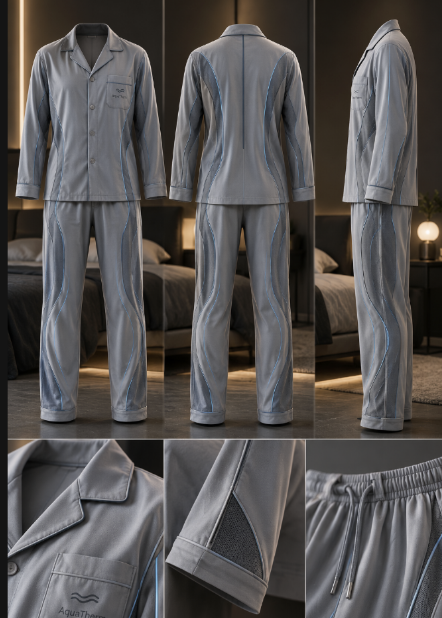

The object we got was pajamas and our format was liquid/watery. With those two prompts, we came up with Aqua-Jamies which are cooling and heating pajamas. Our design included pipes threaded throughout the pajamas that hold water. The cooling/heating aspect comes from the temperature you choose to pump into the pipes. Additionally, we thought of a dock that can be attached to the top of the pajamas allowing our clients to easily switch between the two temperatures.